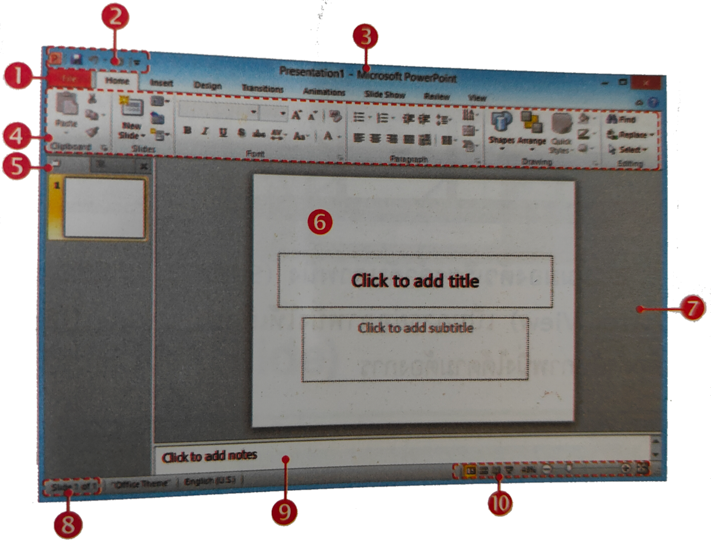

หน่วยที่ 7 การใช้โปรแกรมนำเสนอข้อมูล Microsoft PowerPoint 2010



1. Tab File
2. แถบ Quick Access Toolbar
3. Title Bar
4. Tab ต่างๆ และ Ribbon
5. แถบสลับมุมมองและภาพนิ่งแบบย่อ
6. พื้นที่ว่างของภาพนิ่ง
7. พื้นที่ว่างนอกภาพนิ่ง
8. แถบแสดงสถานะ
9. พื้นที่ใส่โน้ตย่อ
10. แถบมุมมองงานนำเสนอ
คุณสมบัติทั่วไปของโปรแกรมการนำเสนอข้อมูลคือ การเริ่มต้นใช้งานได้ง่าย มีวัตถุดิบให้เลือกใช้มากมาย ความสามารถในการจัดการกับสไลด์ได้ง่าย และความสามารถในการควบคุมการแสดงผลของข้อมูลได้ดี
การเริ่มต้นใช้งานได้ง่าย หมายถึง โปรแกรมได้จัดเตรียมรูปแบบสไลด์ ที่จะนำเสนอข้อมูล ให้ผู้ใช้สามารถเลือกใช้ได้ตามความพอใจ และตามความเหมาะสมของงาน โดยไม่จำเป็นต้องสร้างรูปแบบขึ้นมาเอง โปรแกรมบางโปรแกรมได้พัฒนาให้มีความสะดวกสำหรับผู้ใช้มือใหม่ ด้วยการเรียกใช้ส่วนช่วยเหลือแนะนำการสร้างงานนำเสนอข้อมูลที่ละขั้นตอนจนเสร็จ เพื่อให้ได้งานที่ถูกใจ นอกจากนี้ ผู้ใช้ยังไม่จำเป็นต้องมีฝีมือทางศิลปะ และมีความเชี่ยวชาญด้านคอมพิวเตอร์เป็นพิเศษ ก็สามารถสร้างงานสำหรับนำเสนอข้อมูลได้อย่างรวดเร็ว สวยงาม และสะดุดตา เพราะโปรแกรมการนำเสนอข้อมูลมีวัตถุดิบให้เลือกใช้มากมาย นอกจากข้อความ (Text) แล้วยังมีข้อมูลในรูปแบบอื่นๆ เช่น แผนผัง ( Chart) กราฟิก (Graphic) เสียง (Sound) วีดิทัศน์ (Video) เป็นต้น โปรแกรมรุ่นใหม่ๆ ในปัจจุบันจึงได้เพิ่มแฟ้มข้อมูลของวัตถุดิบเหล่านี้ไว้มากมายให้เลือกใช้ได้ตามความพอใจ ดังนั้น งานนำเสนอข้อมูลแบบใหม่จึงเป็นการแสดงข้อมูลที่ผสมผสานข้อมูลรูปแบบต่างๆ เข้าด้วยกัน เรียกว่า การนำเสนอข้อมูลแบบสื่อประสม (Multimedia) ข้อมูลในรูปแบบต่างๆ เหล่านั้นจึงจัดเป็นวัตถุดิบที่สำคัญสำหรับการสร้างงานนำเสนอข้อมูลให้น่าสนใจและเข้าใจได้ง่ายขึ้น

ความสามารถในการจัดการกับสไลด์ได้ง่าย หมายถึง ความสามารถในการกำหนดรูปแบบหลัก หรือรายละเอียดอื่นๆ ของสไลด์ไว้เพียงครั้งเดียว เช่น สีของพื้นหลังสไลด์ สีของข้อความ รูปแบบตัวอักษร เป็นต้น จากนั้น จึงนำรูปแบบหลักนี้ไปใช้กับทุกสไลด์ที่อยู่ในแฟ้มข้อมูลนั้นให้กับหน้าหลักเพียงหน้าเดียว ถ้ามีการแก้ไขปรับแต่งในภายหลัง ก็สามารถทำได้ในหน้าหลักเพียงหน้าเดียวเช่นกัน โดยโปรแกรมจะแก้ไขให้เองอย่างอัตโนมัติในทุก ๆ หน้า การสร้างหน้าใหม่ การลบสไลด์บางหน้า หรือการสับเปลี่ยนลำดับการแสดงผล สามารถทำได้ง่ายและรวดเร็วยิ่งขึ้น โดยไม่จำเป็นต้องสร้างไปเรียงไปทีละหน้าให้ถูกต้องตั้งแต่แรก

โปรแกรม Microsoft PowerPoint 2007 เป็นโปรแกรมหนึ่งในตระกูล Microsoft Office เหมาะสำหรับการจัดสร้างงานนำเสนอข้อมูล (Presentation) สำหรับนำไปประยุกต์ใช้ในงานได้หลายประเภท เช่น การนำเสนอข้อมูลสินค้าและบริการ การจัดทำ Slide Show การออกแบบแผ่นพับ เป็นต้น
หลักการทำงานของ PowerPoint
สำหรับ หลักการทำงานของ Presentation ที่สร้างจาก PowerPoint จะสร้างออกเป็น slide ย่อยๆ แต่ละ slide สามารถใส่ข้อมูล รูปภาพ ภาพเคลื่อนไหว หรือเสียง เพื่อสร้างความน่าสนใจเพิ่มขึ้น นอกจากนี้เรายังสามารถกำหนดให้ Presentation ของเรา นำเสนอออกมาแบบในรูปแบบอัตโนมัติได้โดยไม่จำเป็นต้องมีการกดเลือกให้แสดงทีละ slide
ก่อนเริ่มต้นสร้าง Presentation ควรกำหนดรูปแบบของ Presentation ของเราก่อนว่า ต้องการให้แสดงออกในรูปแบบใด เช่น ต้องการให้ส่วนด้านบน แสดงเป็นชื่อหัวข้อ ด้านล่างเป็นชื่อบริษัท และฉากหลังให้แสดงเป็นสีน้ำเงิน เป็นต้น แต่ถ้ายังคิดไม่ออก สามารถเลือกรูปแบบจาก ตัวอย่าง Themes (เวอร์ชั่นเก่าเรียกว่า Template) ที่โปรแกรมมีไว้ให้ได้ เช่นเดียวกัน
สรุปความสามารถพื้นฐานของ PowerPoint 2010

แบบทดสอบหลังเรียน